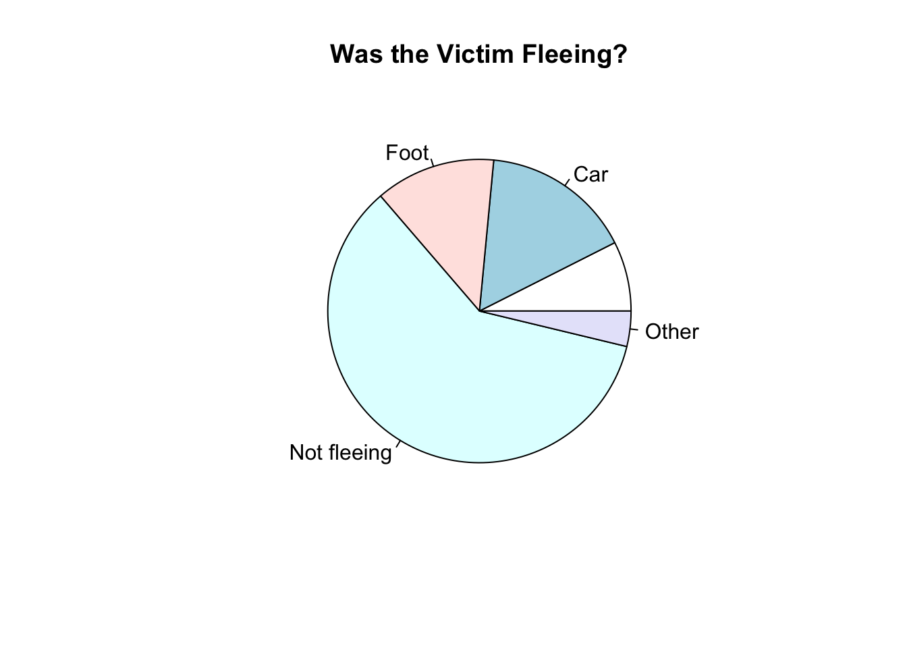
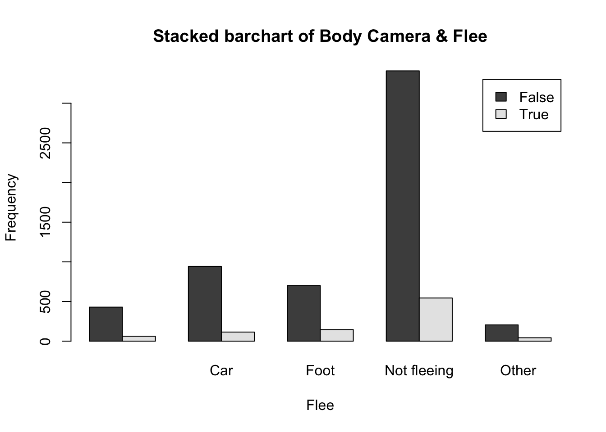

Exam 1
Marcus Ramirez
10/04/2021
Instructions
Create a folder in your computer (a good place would be under Crim 250, Exams).
Download the dataset from the Canvas website (fatal-police-shootings-data.csv) onto that folder, and save your Exam 1.Rmd file in the same folder.
Download the README.md file. This is the codebook.
Load the data into an R data frame.
dat3 <- read.csv("~/Desktop/Crim 250 - Exam 1/fatal-police-shootings-data.csv")Problem 1 (10 points)
- Describe the dataset. This is the source: https://github.com/washingtonpost/data-police-shootings . Write two sentences (max.) about this.
The dataset demonstrates the record of fatal police shootings towards civilians by on-duty officers. Additionally, it documents various details regarding the shooting including but not limited to: if the civilian was armed, their age, their race, etc.
- How many observations are there in the data frame?
dim(dat3)## [1] 6594 17There are 6594 observations (victims recorded) in the data frame.
- Look at the names of the variables in the data frame. Describe what “body_camera”, “flee”, and “armed” represent, according to the codebook. Again, only write one sentence (max) per variable.
body_camera refers to whether or not the officer was wearing a body camera that may have recorded a portion of the incident. flee refers to how, if at all, the victim was trying to get away from the officers. armed refers to whether or not the victim was armed with a weapon that the officer believed could’ve inflicted arm.
- What are three weapons that you are surprised to find in the “armed” variable? Make a table of the values in “armed” to see the options.
table(dat3$armed)##
## air conditioner
## 207 1
## air pistol Airsoft pistol
## 1 3
## ax barstool
## 24 1
## baseball bat baseball bat and bottle
## 20 1
## baseball bat and fireplace poker baseball bat and knife
## 1 1
## baton BB gun
## 6 15
## BB gun and vehicle bean-bag gun
## 1 1
## beer bottle binoculars
## 3 1
## blunt object bottle
## 5 1
## bow and arrow box cutter
## 1 13
## brick car, knife and mace
## 2 1
## carjack chain
## 1 3
## chain saw chainsaw
## 2 1
## chair claimed to be armed
## 4 1
## contractor's level cordless drill
## 1 1
## crossbow crowbar
## 9 5
## fireworks flagpole
## 1 1
## flashlight garden tool
## 2 2
## glass shard grenade
## 4 1
## gun gun and car
## 3798 12
## gun and knife gun and machete
## 22 3
## gun and sword gun and vehicle
## 1 17
## guns and explosives hammer
## 3 18
## hand torch hatchet
## 1 14
## hatchet and gun ice pick
## 2 1
## incendiary device knife
## 2 955
## knife and vehicle lawn mower blade
## 1 2
## machete machete and gun
## 51 1
## meat cleaver metal hand tool
## 6 2
## metal object metal pipe
## 5 16
## metal pole metal rake
## 4 1
## metal stick microphone
## 3 1
## motorcycle nail gun
## 1 1
## oar pellet gun
## 1 3
## pen pepper spray
## 1 2
## pick-axe piece of wood
## 4 7
## pipe pitchfork
## 7 2
## pole pole and knife
## 3 2
## railroad spikes rock
## 1 7
## samurai sword scissors
## 4 9
## screwdriver sharp object
## 16 14
## shovel spear
## 7 2
## stapler straight edge razor
## 1 5
## sword Taser
## 23 34
## tire iron toy weapon
## 4 226
## unarmed undetermined
## 421 188
## unknown weapon vehicle
## 82 213
## vehicle and gun vehicle and machete
## 8 1
## walking stick wasp spray
## 1 1
## wrench
## 1Three weapons that I am surprised to find in the “armed” variable are: air conditioner, stapler, and microphone.
Problem 2 (10 points)
- Describe the age distribution of the sample. Is this what you would expect to see?
hist(dat3$age, main="Histogram of age", xlab="Age", ylab="Frequency")
The age distribution seems to be skewed right quite a bit, meaning that the ages of the victim are clustered around the ages of about 20-40 years old. This is what I would expect to see since, according to the Washington Post article, an overwhelming majority of victims are young males. It also notes that more than half the victims are between 20-40 years old which is shown by the higher frequency levels in the histogram from ages 20-40.
- To understand the center of the age distribution, would you use a mean or a median, and why? Find the one you picked.
I would use the median because the mean may not be the best measure of central tendency when the data is skewed (which in this case it wass skewed right). The median of the age distribution in this dataset is 35 (years old).
- Describe the gender distribution of the sample. Do you find this surprising?
counts <- table(dat3$gender)
barplot(counts, main="Gender Distribution", xlab="Gender", names=c("Missing", "Female", "Male"))
The gender distribution of the sample is overwhelmingly male. There are over 6200 male victims reported in comparison to the nearly 300 female victims. This is not surprising since the study notes that the typical victim of a fatal police shooting is a young, black male (over 95% of victims).
Problem 3 (10 points)
- How many police officers had a body camera, according to news reports? What proportion is this of all the incidents in the data? Are you surprised that it is so high or low?
table(dat3$body_camera)##
## False True
## 5684 910910 police officers had a body camera, according to the news report. This means that only about 13.8% of all the incidents in the data involved a police officer with a body camera. I am not surprised this is so low because typically an officer wouldn’t want to wear a body camera to circumvent the responsbilities and consequences that would come with fatally shooting a civilian that was possibly innocent. If a greater proportion of officers in these incidents wore a body camera it may lead to a negative perception of police and communities viewing them as dangerous.
- In how many of the incidents was the victim fleeing? What proportion is this of the total number of incidents in the data? Is this what you would expect?
counts <- table(dat3$flee)
counts##
## Car Foot Not fleeing Other
## 491 1058 845 3952 248pie(counts, main="Was the Victim Fleeing?")
The victim was fleeing (either by car or foot) in 2151 of the cases; this accounts for about 32.6% of the total number of incidents. This proportion is relatively low, but it is what I would expect since in a scenario where police may shoot victims, which are primarily young, black males, the victim tends to stay still so as to not pose a threat to the officer. From the fatal shootings that typically make media coverage, many people know black males get criminalized often and shot dead when not following an officers’ directions. The “other” in the datset may account for victims that were fleeing by another mode of transportion (bike, scooter, etc.) but since they were not included in “not fleeing” I added them to the total number of victims fleeing (by car or foot) in the dataset just to be inclusive.
Problem 4 (10 points) - Answer only one of these (a or b).
- Describe the relationship between the variables “body camera” and “flee” using a stacked barplot. What can you conclude from this relationship?
Hint 1: The categories along the x-axis are the options for “flee”, each bar contains information about whether the police officer had a body camera (vertically), and the height along the y-axis shows the frequency of that category).
Hint 2: Also, if you are unsure about the syntax for barplot, run ?barplot in R and see some examples at the bottom of the documentation. This is usually a good way to look up the syntax of R code. You can also Google it.
tab.agesex <- table(dat3$body_camera, dat3$flee)
barplot(tab.agesex,
main = "Stacked barchart of Body Camera & Flee",
xlab = "Flee", ylab = "Frequency",
legend.text = rownames(tab.agesex),
beside = TRUE) # Stacked bars (default)
From the graph, it looks like in incidents where the victim attempts to flee (by car, foot, or another mode of transportation), the likelihood of an officer wearing a body camera decreases. In contrast, when a victim is not fleeing, the likelihood of an officer wearing a body camera increases (a higher frequency of cases where the victim is not fleeing and a body camera is present). Still though, across all fleeing scenarios, the frequency of police officers not wearing body cameras is overwhelmingly higher, especially in cases where victims are not fleeing. Overall, you could note that an officer is not likely to be wearing a body camera but that the likelihood decreases when a victim is not feeling. I would conclude that a victim that is not fleeing is more likely to be fatally shot because the likelihood of a body camera recording is much lower, which gives a police officer more freedom to act without repercussions.
- Describe the relationship between age and race by using a boxplot. What can you conclude from this relationship?
Hint 1: The categories along the x-axis are the race categories and the height along the y-axis is age.
Hint 2: Also, if you are unsure about the syntax for boxplot, run ?boxplot in R and see some examples at the bottom of the documentation. This is usually a good way to look up the syntax of R code. You can also Google it.
Your answer here.
Extra credit (10 points)
- What does this code tell us?
mydates <- as.Date(dat3$date)
head(mydates)## [1] "2015-01-02" "2015-01-02" "2015-01-03" "2015-01-04" "2015-01-04"
## [6] "2015-01-04"(mydates[length(mydates)] - mydates[1])## Time difference of 2458 daysThis code tells us that the difference between the amount of days between the first date the fatal shooting of a victim was recorded up until the latest date a fatal shooting was recorded will be calculated. In this case the difference was 2458 days.
- On Friday, a new report was published that was described as follows by The Guardian: “More than half of US police killings are mislabelled or not reported, study finds.” Without reading this article now (due to limited time), why do you think police killings might be mislabelled or underreported?
Police killings may be underreported beecause many of the scenarios may not involve body cameras that record the incidents to provide evidence for the officers to be forced to be held accountable. Fatal police shootings may also be mislabeled as accidents due to this reason since police can claim their lives were threatened or that they only meant to control the threat not fatally shoot the civilian.
- Regarding missing values in problem 4, do you see any? If so, do you think that’s all that’s missing from the data?
There are some missing values in the “flee” dataset theat got marked as “other.” I interpreted those cases as victims that were fleeing but not by car or foot since they weren’t just included with victims in the “not fleeing” category. However, they may also indicate victims that we are not sure what they did. I don’t think that’s all that’s missing from the data because, for example, the “armed” data says “undetermined” for some of the victims which also acts as missing data.